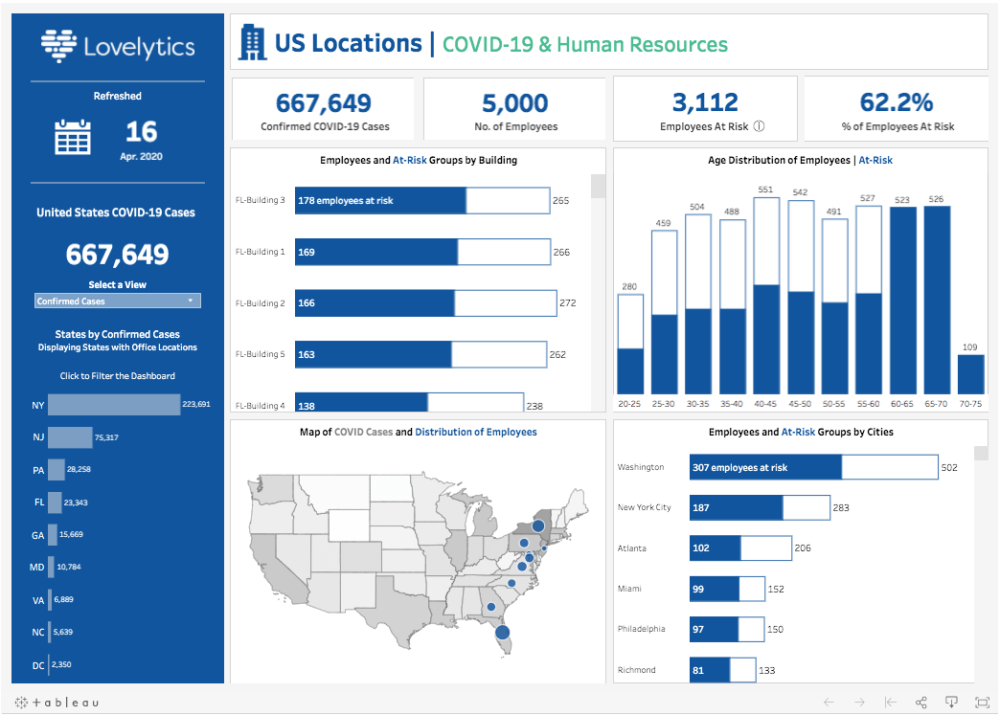

I applied advanced data cleaning, analysis, and visualization techniques, identifying key patterns of poverty and inequality. I used Python and Tableau to transform large volumes of data into actionable insights, optimizing socioeconomic analysis in different regions of the country.


Este proyecto consistió en limpiar, transformar y analizar datos del mercado inmobiliario de Nashville utilizando PostgreSQL para asegurar la calidad y consistencia de la información. Implementé técnicas avanzadas de manejo de datos, como estandarización de fechas, partición de columnas, eliminación de duplicados y actualización de valores faltantes. Posteriormente, exporté los datos limpios y los visualicé en Tableau, creando dashboards interactivos para analizar tendencias de precios, distribución geográfica y tipos de propiedades.

Este proyecto es un análisis de datos en SQL sobre mortalidad y vacunación global relacionadas con el COVID-19 entre 2020 y 2024. Incluye la creación y carga de tablas de datos, cálculos de tasas de mortalidad y vacunación, y comparaciones por país, región y periodos. El análisis culmina en la preparación de datos para visualización, proporcionando insights claros sobre la evolución de la pandemia y el avance en la vacunación mundial.

This Tableau project analyzes the impact of COVID-19 through interactive visualizations that explore the evolution of cases and their geographic distribution. I used advanced data cleaning and manipulation techniques to extract key insights, identify trends, and evaluate the impact of public policies. The dashboard reflects my ability to transform large volumes of data into clear, actionable visualizations for decision-making.

The "Movie Correlation Analysis" project uses Python and libraries such as pandas, numpy, seaborn, and matplotlib to analyze a movie dataset and examine correlations between key variables such as budget, box office, and IMDb ratings. Through data cleaning and visualization techniques, patterns are identified that allow for assessing the impact of different factors on movie success. This analysis demonstrates my skills in data manipulation, insight extraction, and creating effective visualizations to make data-driven decisions.
In this project, I conducted an exhaustive data cleaning and preparation process using SQL, with the aim of ensuring the quality and accuracy of the information for further analysis. I applied normalization techniques, handling of missing data, and de-duplication, transforming a raw data set into a reliable source for trend analysis. This work not only highlights my skills in data manipulation, but also demonstrates my ability to use data analysis tools effectively, ensuring that data-driven decisions are informed and accurate.

El proyecto "Análisis Integral de la Pobreza en Perú: Un Estudio de 2019", se centra en un análisis exhaustivo de la pobreza en Perú durante el año 2019. Utiliza técnicas de ciencia de datos para explorar diversas variables relacionadas con la pobreza, como ingresos, empleo y estratificación socioeconómica. El análisis incluye la visualización de datos y la evaluación de indicadores clave, buscando identificar patrones y correlaciones que puedan contribuir a una mejor comprensión de la situación de la pobreza en el país. Este trabajo es fundamental para formular políticas más efectivas y orientadas a la reducción de la pobreza.